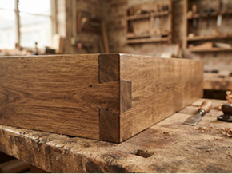

♻ Bois & chêne récupéré 110 €Atelier Menuiserie : Table basse ou Étagère en Chêne Récupéré
Apprenez les assemblages à mi-bois, le rabotage traditionnel et la finition aux huiles naturelles sur d'anciennes poutres déclassées.
Prochaines dates :
3 places restantes
Sam. 14 Oct (14h00)
Mer. 18 Oct (18h30)
Sam. 28 Oct (09h30)
⚒ Outillage & bois fournis
Sélectionner →